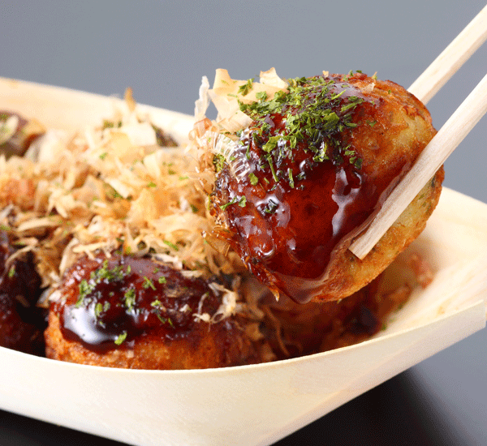

Takoyaki Octopus Balls

Description
- Transport yourself to the busy side streets and summer festivals of Japan with this great-tasting takoyaki recipe. Takoyaki are a kind of dumpling, made from grilled puffs of seasoned batter with a small piece of octopus meat in the middle, with sauces and seasonings scattered along the top. Serve these bite-size pieces of heaven at parties or enjoy them as warming snacks. Browse our takoyaki ingredients to shop for all you need to make this tasty treat.
Ingredients
-
- Batter:
-
- 200g flour
- 2 eggs
- 450mL water
- 1 pinch dashi stock powder
- Fillings:
-
- 100g fresh boiled octopus, chopped
- 1 bunch spring onion, chopped
- red pickled ginger
- tempura flakes
- Toppings:
-
- takoyaki sauce
- japanese mayonnaise
- aosa powdered seaweed (or aonori)
- katsuobushi bonito flakes
Steps
-
- Start by creating the batter. Grab a large bowl and mix together 2 eggs, 200g of flour, 450ml of water and a little dashi stock. Set this aside. If you have the ready-made okonomiyaki flour, follow the directions for making the batter and you’re good to go.
- Place your takoyaki plate on the gas stove on medium heat and heat up a small amount of oil in each hole.
- Cut up your octopus into small pieces. Place a piece of octopus in each of the semi-circular holes, and then fill up each hole to the top with the batter mix. You can even overflow the batter out of the hole to make it easier to flip them later.
- Now you can add the chopped spring onion, red pickled ginger and tempura flakes to each hole. The amount you add is up to you, but only a small amount of each will give enough flavour.
- Once the takoyaki are about half cooked, about 1-2 minutes, you will need to flip them over. The best way to do this is to use a small wooden skewer to poke the outside of the batter and flip it over within the hole. This takes a bit of practice to get done smoothly so keep trying if you are making a mess.
- You can usually only flip each takoyaki about three quarters of the way round so allow it to cook a little more before flipping it again. By now, all your takoyaki should be round so keep rotating them in the holes to make sure that they cook evenly on all sides. This will take about 3-4 minutes until golden brown on the outside.
- Place a few takoyaki on a plate and smother them with loads of takoyaki sauce and Japanese mayonnaise. Then sprinkle a bit of powdered seaweed and some bonito flakes on top and enjoy. Allow to cool slightly and enjoy hot.
Tips
-
- Try experimenting with different toppings. You can even use a citrus based soy sauce called ponzu for a sharper/lighter taste if you like.
- Okonomiyaki sauce is very similar to takoyaki sauce so either can be used to get the same delicious taste.
- If you don’t like octopus, you can try making takoyaki with different ingredients such as chicken. Vegetarians can replace the octopus with vegetables like shiitake mushrooms.
- If you don't have a takoyaki pan, you can also use a aebleskiver pan for Danish pancake puffs. The balls will be slightly bigger than traditional takoyaki when finished, but they will still be just as good.
Back to Home Page